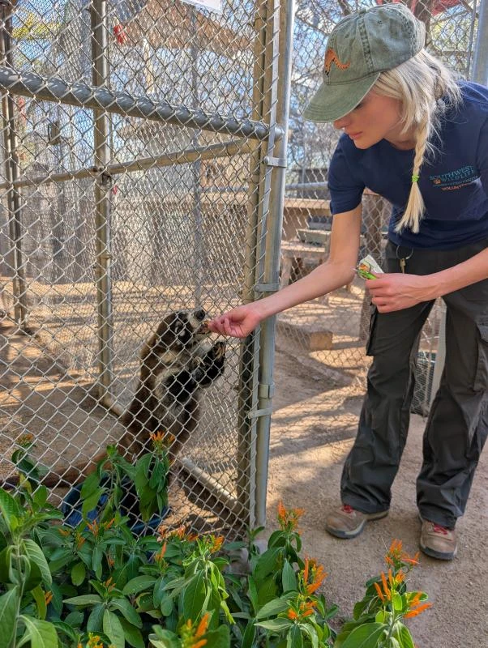
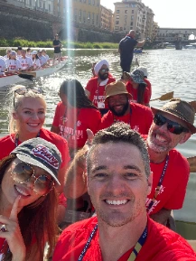

03 / COMMUNITY
Good work happens
offline, too.
Caring for Arizona’s wildlife. Connecting with people who keep me learning.

SCOTTSDALE, ARIZONA / VOLUNTEERING
A little care.
A wilder world.
Southwest Wildlife Conservation Center
Volunteer Animal Care Technician
I volunteer as an animal care technician at Southwest Wildlife Conservation Center in Scottsdale. It’s a hands-on connection to the animals and landscape that make the Sonoran Desert home.
The center rescues injured, orphaned, and displaced native wild mammals, rehabilitates them for release when possible, and provides sanctuary for animals that cannot return to the wild.
Meet Southwest Wildlife ↗
A closer look at Southwest Wildlife
Watch on YouTube ↗
EO ARIZONA / CONNECTION & EXPLORATION
Shared experiences.
Wider perspectives.
I’ve been involved with EO Arizona for five years, serving as Event Planner and Treasurer for my SLP group. EO brings founders and business leaders together through shared experiences, learning, and meaningful connections.
I’ve also joined EO Explorations in Italy and Croatia: racing dragon boats beneath Florence’s Ponte Vecchio, making artisanal crafts, preparing handmade pasta at a castle in Tuscany, and island hopping in Croatia.

LONG ANGLE / INVESTOR NETWORK
Relationships that
open doors.
I’m a member of Long Angle, a private, vetted community of founders, executives, and investors. The network combines peer insight with access to institutional-grade investment opportunities in private markets.
I’ve used these relationships to source deals for Sonoran Ridge Capital (SRC), including a deal we closed in 2026. It’s a direct connection between the communities I invest in and the opportunities I help bring to the firm.